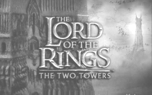
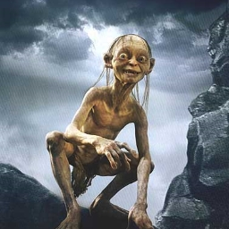
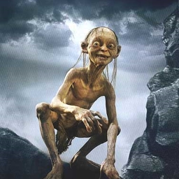

|
 | |
U drugom dijelu, Dvije Kule, priča se nastavlja paralelno u dvije knjige, i u prvoj nam govori o preostalim članovima Družine koji pomažu zemlji Rohan u ratu protiv izdajice Sarumana, nekadašnjeg vođe Reda Čarobnjaka, koji želi Prsten za sebe. Na početku prve knjige, Družina je raštrkana, Merryja i Pippina su zarobili Sauronovi i Sarumanovi orci, Boromir je smrtno ranjen braneći ih, a Aragorn, Gimli i Legolas polaze u potjeru za njima. Njih trojica sreću Gandalfa koji se vratio u Međuzemlje kao Gandalf Bijeli. Oni saznaju da je porazio Balroga i iako je tada i on sam stradao, poslan je natrag i preporođen kao važan lik. Na kraju prve knjige, Gandalf, Aragorn, Legolas i Gimli pomažu pobijediti Sarumanovu vojsku u Helmovoj klisuri i Hornburškoj bitki, dok su Sarumana u kut stjerali Enti i Huorni, zajedno s Merryjem i Pippinom, koji pobjegnu iz zarobljeništva, i tada se dvije grupe sreću.
Druga knjiga drugog dijela govori o Frodu i Samu i njihovom putu do Klete gore. Uspijevaju zarobiti i "ukrotiti" Goluma, koji ih tajno odvede u Mordor, pored ukletog Minas Morgula. Na kraju drugog dijela, Golum izda Froda velikom pauku, Shelobi, i iako Frodo preživi, zarobe ga orci. U međuvremenu, Sauron šalje sve svoje snage u napad na Međuzemlje, zajedno s Kraljem-vješcem, Vođom Utvara, i njegovom vojskom Minas Morgula u bitku protiv Gondora, u Ratu za Prsten.
   |